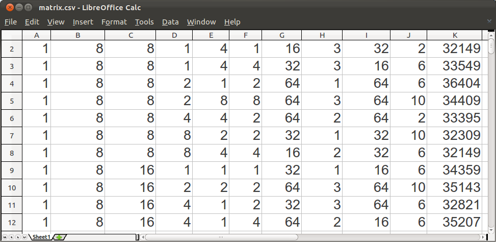

Stargazer is a regression-based GPU design space exploration tool. It can be used to efficiently survey extremely large hardware and software design spaces of modern GPUs. At a high-level, Stargazer completes its tasks through the following steps.
Because Stargazer uses a stepwise method to automatically and reliably prune down the number of useful parameters, the resulting regression model is very compact and easy to understand. Meanwhile, only a very small sample set (compared to the size of the entire design space) is needed to achieve fairly good prediction accuracy, which translates to orders of magnitude of time saved, relative to a fully exhaustive design space exploration. For more details of Stargazer, please refer to the following publication.
Automated Regression-Based GPU Design Space Exploration
Wenhao Jia, Kelly A. Shaw, and Margaret Martonosi
In Proceedings of the 2012 IEEE International Symposium on Performance Analysis of Systems and Software (ISPASS 2012)
The core stepwise method of Stargazer is implemented as an R function. R is a free software environment for statistical computing and graphics (see The R Project website). The R Project maintains a list of useful documentation for learning R. In particular, An Introduction to R is an execellent reference for first-time R users.
Once the release package is downloaded and decompressed, launch R in the extracted directory. The following sequence of R commands invokes Stargazer to build and print a model for the example matrix multiply input (see below). In all examples on this page, ">" represents an R terminal prompt. Users should input the command after ">" and press the enter key.
> source("stargazer.R")
> data = read.csv("matrix.csv")
> model = stargazer(data)
> print(model)
[1] "runtime ~ + ns(blk, knots = c(2, 4, 8)) + ns(simd, knots = c(32)) + ..."The output of Stargazer is a string containing the result model. It should look similar to the last line above, in which ns is the standard R notation for natural splines (type "?ns" in an R terminal to view its usage). To use the result, build the actual linear model and use any standard R prediction function to predict the results (runtime in this example) of a user-specified design.
> attach(data)
> fit = lm(formula(model))
> predict(fit, data)In the example above, an R linear regression model is stored in fit, and it's used to predict the runtime of the original training samples. The difference between these predictions and the actual runtime column in data is the residual of the model. In actual use, users can specify any other values other than data to predict performance of others designs in the space.
The core stepwise regression method of Stargazer (the stargazer function above) does not deal with sampling and measurement—all it needs is an input CSV file that lists the design parameters and measured results of each sampled design. That is why the commands given above use an example input file matrix.csv. This file, inlcuded in the download package, is obtained from a matrix multiply program simulated with GPGPU-Sim on a 933K-point design space (details in the paper). The following graph shows a graphic representation of the content of this input file.

Users of Stargazer can directly feed any input file with a similar layout to the stepwise method, no matter how the input was obtained—simulation or otherwise.
The Stargazer package also comes with other R and Python scripts for automating and/or facilitating various other parts of the workflow. For example, there are scripts that automatically modify parameters and launch GPGPU-Sim, collect simulation results and generate CSV files, run verification tests on a random set of designs to compute average and maximum prediction errors, etc. For more information, please refer to the README document in the downloaded package.
To download the complete source code of Stargazer, please visit its GitHub repository.
For any questions or comments, please contact the authors.